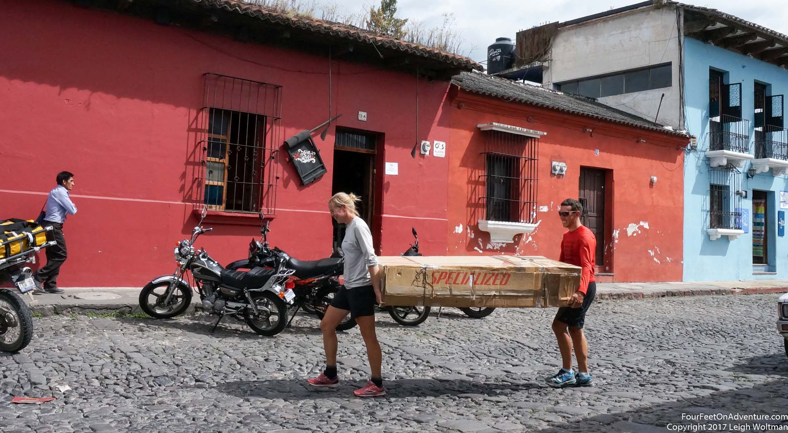

We both still found it hard to believe that the bike trip came to a stop, right there in Veracruz on Gulf of Mexico coast. While we were taking our last pedal strokes around the city, searching for a (well, rather two because one was too small) bicycle box, wood for strengthening the box, tape to make one box out of two, and tools for the wood, it was kind of sad that pedalling along with the normal Mexican folks was going to be over. During those last rides, my memories went frequently back to the highlights. Playing basketball with a kid on a village square where we just had our lunch. Having a good laugh about me being able to get a cereal box from the highest shelf in a store while the shop owner was already on her way to get something to stand on. All those little moments that brought us to places that are way off the normal traveled routes and made us enjoy Mexico even more.
We took an afternoon to box up the bicycle and took a bus to Coatzacalcos. This oil town just had to be part of the story because of its cool name, but we stayed there only a couple of minutes while our bus dropped off some people, before continuing to Palenque. Before I go into detail about this amazing Maya place, I’ll give a definition of what “took the bus” means if you’re traveling with a tandem bicycle.

Hotel to bus: Carry an enormous bike box with two people to the bus station. Settle one person there with the bike box. The other person then walks back and gets all the rest of the luggage.
Bus to hotel: One person stays with everything at the bus station. The other person goes to scout out hotels, picks one, comes back, gets the luggage, and brings the luggage to the hotel room. That person walks back, and then both people carry the enormous bike box to the hotel room.
The point here is, traveling with a tandem but not on a tandem can be done, especially in Mexico where people are not thinking anything of transporting a large box in their bus. A somewhat surprising side note here is that multiple people asked us if there was a television screen inside. Do they really think that we westerners are so addicted to our Netflix that we can’t travel without a ginormous television screen to watch at night in our hotels?? Back to the point, traveling with the box is far from ideal. It doesn’t fit in a taxi, so you’ll be scouting for hotels near the bus station. Getting the box small enough for it to fit in a bus requires the bike to be taken apart quite intensely, so that just putting it together and biking away at a bus station is out of the question. So, our recommendations would be: either biking or not biking during a holiday-on-the-move, but not both.
Anyways, back to the amazingness of Mexico. Honestly, I loved that country. So much diversity, super nice people, beautiful landscapes. Wow!
Palenque holds an old Maya ruin. Mayans still live in this area, but for some reason places got abandoned and forgotten, except for the local Mayans, who usually showed a westerner the ruins, leading to its discovery. Although technically that means it was never really lost I guess. The temple of inscriptions is the most amazing thing found there. At the top platform, an archeologist removed a stone in 1952, revealing a hidden stair going inside the pyramid, heading to a tomb with a beautiful sarcophagus in it. One of the other pyramids held a grave of the red queen, who had a very famous jade mask covering her face. It was a super pretty place, and we enjoyed hanging around among the pyramids, trying to picture how it was back around the year zero, and finding little roads between pyramids to other, jungle covered, unrestored buildings. The rainforest proved quite humid. In combination with a tropical thirty degrees, it made for a sweaty day. I love hanging around in old ruins (which Leigh has learned by the many backroads we had to take to get to archeological sites), and this one gave an entirely new vibe because of its waterfalls and jungle and hot temperatures, compared to the mild plateau and dry desert areas where we had been before. The collectivos, little mini-vans that take you pretty cheap to where you yell at the driver to stop, were useful and cheap. We weren’t really used to public transport much, because we always just bike anywhere, but we’re getting the hang of it.
In the afternoon we went on another adventure. It took a while to find the right one, but then we took a collectivo to some place deep in the jungle on a road where we were warned not to be after sunset. Somewhere along that road was a waterfall that we wanted to go to. Finding a bus pretty late bought us to the waterfall road exit around 3:30 pm. I wondered how many busses passed by, and if it wouldn’t be a better idea to turn around, stand on the road and hope that a bus would pass that could take us. But, it was only a one kilometre walk to the waterfall, and after all the effort it seemed that we should just go there. So we walked down the road, and got to at a rope across the road that was connected to a little building on the side, with some people who wanted some money for passing (something like one dollar). We couldn’t figure out why, but oh well. A little later we heard and later saw the waterfall. Amazing. Very high. We couldn’t resist going for a swim, which was refreshing without being cold (look closely in the picture, it's a very small Leigh swimming!) Such a beautiful spot. It made me want to see more of the Chiapas, because it must hold a ton of potential adventures. If only we were biking it… We didn’t wait too long, to walk back up to the road. While we were getting ready to stand around, a car pulled up with some Mexicans who were on a conference in Palenque and did a quick visit of the waterfall before heading back to where they came from. If we wanted a ride … so, that was settled easily, glad we didn’t spend too much time worrying about how to get back.
Something we weren’t quite used to is tourist places, since biking mostly leaves us at non-tourist places, which I usually prefer, though I like visiting beautiful spots also. In Palenque we realized that being a tourist has advantages: nice hotels, good food, life band music (not the Mexican shouter who goes play the guitar and sing super loud within 50 cm of your ear, which authentic habit I couldn’t get appreciative of), and English speaking people around. Disadvantage was the corrupt bus station luggage guy, who knew we were eventually going to fill his pockets with money because he had the ability to make us miss our bus. We found that in other bus stations they either didn’t ask a fee, or a very small, more reasonable one.

Next on our trip was one of my bucket list things, going to a sea turtle hatchery. We went to the town of Puerta Arista. Now sleepy and desolate, but in high seasons and weekends apparently a beach destination full of people. At the very back of this town was a government run Santuario Tortuguero. At this very low key place was a super friendly lady asking what we came for. She showed us the hatchery. Basically, they patrol the beach at night, and when a turtle lands and deposits the eggs, they get them, and bury them in the sand within their hatchery ground, to make sure poachers, birds and dogs don’t get them. They put a little stick with the date next to the pile. There, after several weeks, turtles hatch. So every morning, staff have a look if turtles appeared. They collect them in a bucket, and at night when it’s dark and there are less predators around, they release them on the beach, so they can shuffle their way into the ocean. This morning there was a bit of a baby-turtle harvest, so we had a look in the bucket and immediately fell in love with the overly cute little creatures that were flapping around with their flippers. We hung out there for a while, I was testing my primitive Spanish in a conversation with the lady, Leigh was keeping an eye on the bucket of little cuties, and a guy came by and provided us a typical snack obtained from within the premises: coconut and knife. While I was slowly slaughtering the nut and rambling along, I felt calm and happy to just be there. It felt right. We slowly walked back along the beach, taking an occasional swim in the nicely warm water. Great day!
The last stop before going home was Antigua, Guatemala. In this area (as in the Chiapas), it was currently the end of the rainy season, meaning that days could be wet. The first night we walked around and saw Fuego, one of the volcanoes that surrounds the city, erupting with frequent intervals. You’d see a black puff of smoke, and red lava appearing near the top. Wow! The rest of our time here it was mainly cloudy, unfortunately. We did visit one of the other volcanoes, which is famous for a large, now solid, lava field, but we didn’t see much of it through the mist, though we still roasted marshmallows in little holes in the crust.

Antigua is a colonial place, we liked it, but prices were a lot higher than Mexico and it was overly touristic. We did really enjoy the crafts market, where Mayas are selling woven blankets and all kinds of other things. There are so many colors in that place that it’s hard to decide where to look. It wasn’t very busy when we were there, so we had some room for negotiation, which added some of the fun to the visit. We came home with a typical Guatemalan blanket, a skirt and some coffee.

On the last day I went for a little horse riding trip over the slopes of one of the volcanoes. My horse was a Spanish style beauty with some Arabian blood in him. The guides horse was even more of a classic white beauty, a stallion who got mad at himself for not wanting to go over a speed bump (so I had to go first), and stamping around in dismay while the guide tried to get some control back. We went through the fields where Mayans were growing corn and beans. We picked fruits from trees to nibble on. Some sections were through the jungle, to get to another agriculture field. It was wonderful to be out of town and see the countryside from close by. The guide was pleased with me being able to stay on the horse in all gaits and made use of it, so we had a good trip. My primitive Spanish kept our conversations quite short.

It was then time to head back. The travel seemed to take forever, which was mainly due to us accidentally having booked a flight that we didn’t want, but we ended up watching sunset and sunrise over the Rockies from a jacuzzi near the Calgary airport, which made up for some of it. And most importantly, the tandem made it in one piece, and so did we and our luggage. Back in Winnipeg, where the negative temperatures quickly made us wonder if we should just get the first flight back…